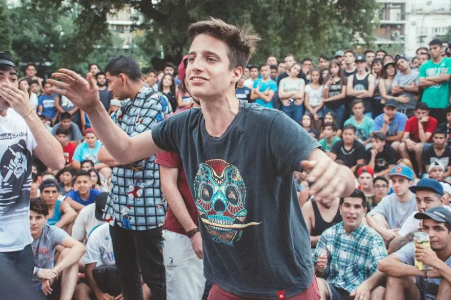
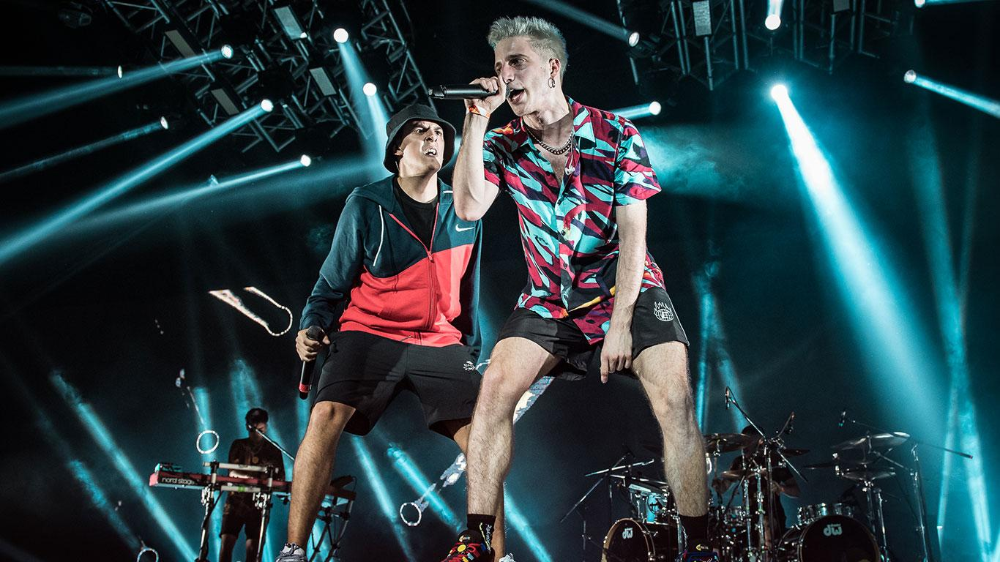

LA HISTORIA DE WOS
Biografía de Wos

Valentín Oliva (23 de enero de 1998) MC y Freestyler, mejor conocido como Wos. Nació en Buenos Aires, Argentina. Actualmente es considerado uno de los mejores exponentes del freestyle latinoamericano. Wos se dio a conocer a través de El Quinto Escalón en 2013. En 2017, ganó la Red Bull Batalla de los Gallos Argentina y un año después la Red Bull Internacional. Wos hizo su debut musical con el sencillo Protocolo en 2017. En 2019, lanzó su álbum debut Caravana junto a los sencillos Canguro y Melón Vino.
Quinto Escalón
El 18 de diciembre de 2016 se dio lo que, para la mesa chica de la organización de El Quinto Escalón, significó un gran cierre de un año. A día, Wos, un joven de 18 años que ya venía apareciendo en las fechas de plaza– marcó un antes y un después en la escena argentina.
La competencia contó con los mejores competidores del circuito underground argentino, algunos invitados y con la participación de dos freestylers chilenos: Ricto y Drose. Wos, Klan, MKS, Wolf, Beelze, Underdann, Nasser, Duki, Dam, Ecko, Nacho, Trueno, Replik, Frijo, MTA, Dani, Luchito, MP, Acru, y Midel fueron los demás participantes.
El primer enfrentamiento de la jornada fue Dtoke vs. Wos vs. Frijo, batalla que sirvió como primera muestra de que Wos apuntaba a cosas grandes. Todo un reto para él, ya que enfrente tuvo a un Dtoke más que consagrado. Su segundo enfrentamiento fue contra Trueno, otro representante de la sangre nueva y del obligatorio recambio que tuvo la escena. Este no le trajo muchas dificultades al que se consagraría campeón minutos después, debido a que se vio incapaz de controlar de manera correcta los beats que DJ Xolarz soltó. En semifinales batalló contra Acru, que estuvo al mismo nivel que su rival en esa instancia. Y después de una réplica, Wos ganó la batalla por decisión unánime.
En la final, Wos compitió contra otro veterano de la escena y uno de los participantes más reconocidos, Klan. Este último, de los prospectos más aclamados por el público del Kingto, llegó al enfrentamiento decisivo después de vencer a Nacho, Midel, Underdann y Ecko en las rondas anteriores. Sin embargo, el hoy campeón internacional de Red Bull Batalla de los Gallos, logró vencerlo sin réplica y levantó su primer título de campeón nacional. Esa victoria de Wos marcó un antes y un después en la historia del freestyle argentino, que luego repercutió en la escena mundial. A su corta edad, demostró que los raperos ya consagrados e icónicos también sangran. Y que subestimar a los freestylers de la plaza podía terminar en un terrible pecado. ¡Grande, Wos!
Red bull
Frente a más de 11.000 espectadores, Valentín Oliva, más conocido como Wos, se coronó como el nuevo campeón internacional de Red Bull Batalla de los Gallos. El freestyler argentino derrotó al mexicano Aczino, quien había sido el ganador de la anterior edición de ese importante certamen. En esta oportunidad compitieron 16 raperos de 13 países hispanoparlantes: Argentina, Colombia, Bolivia, Chile, Costa Rica, Cuba, Ecuador, España, México, Panamá, Perú, Venezuela y República Dominicana. De todos ellos el menor en edad es el peruano Jaze, con apenas 19 años recién cumplidos.
La intensa final del prestigioso concurso se llevó a cabo ayer 9 de diciembre en el Club Hípico Argentino y se extendió por más de 3 horas llenas de punchlines, rimas picantes y momentos emocionantes. Sobre la presión que sentía al jugar de local, Wos comentó lo siguiente ante los medios, según reporta un comunicado oficial:
"Ser el favorito es lo normal de local, pero por suerte la gente me animó con respeto, y también corearon el nombre del resto"
Freestyler a cantante
En el ámbito musical, Wos hizo una colaboración con Acru en la canción "Animal", y también sacó dos temas, el primero, Canguro, lanzado en agosto, con un fin de incentivar a la población argentina para que voten adecuadamente en las Elecciones presidenciales de Argentina de 2019, convirtiéndose en su tema más visto en la actualidad; y el segundo, Melon Vino, iniciando el mes de septiembre. Wos sacó su primer álbum de estudio iniciando el mes de octubre, titulado "Caravana", incluyendo 7 canciones: "Canguro, Melón Vino, Luz Delito, Fresco, Pantano, Okupa y No va a bajar", consiguiendo bastante repercusión en las plataformas de música como YouTube y Spotify.
Canguro
Wos no tiene que demostrar absolutamente nada como freestyler. Es ya uno de los máximos exponentes y así lo confirmó su primer puesto en la final internacional de la Red Bull Batalla de los Gallos 2019. Esto le lleva a explorar más allá de este universo para ponerse a prueba como letrista, siendo ‘Canguro’ el primer adelanto de una futura referencia que llevará por título ‘Caravana’. La pieza cuenta con dirección de Rafael Nir y Tomás Curland, así como realización de La casa de al lado.
Melón Vino
La canción forma parte de su album debur, titulado "Caravana" La produccion general del tema es de Peter Ehrlich mientras que Facu Yalve se ha encargado de la producción musical. Rafel Nir y Tomás Cutland son los directores
Si quieres conocer más su historia haz click aquí